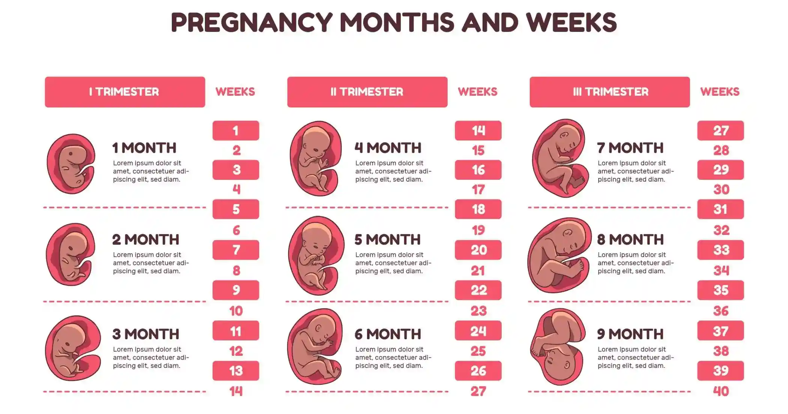

Month by Month Pregnancy Guide
A complete month-by-month pregnancy guide covering symptoms, baby development, and essential care tips for every stage.

Introduction
Pregnancy is a beautiful journey that lasts around 40 weeks and is divided into three trimesters. Each stage brings important changes in both the mother’s body and the baby’s development.
Understanding pregnancy month by month helps reduce anxiety, improves preparation, and ensures better care. From early symptoms like nausea and fatigue to final delivery preparation, every month plays a vital role.
This guide provides a clear breakdown of symptoms, baby growth, and essential care tips for each month, helping you navigate pregnancy with confidence and peace of mind.
First Trimester (Month 1 to 3)
The first trimester (Month 1–3) is the most critical stage because the baby’s brain, heart, and major organs begin to develop. Many women experience early pregnancy symptoms as the body adjusts to hormonal changes.
Month 1
- Fertilization and implantation occur
- Missed period is the first sign
- Start folic acid supplements
Month 2
- Morning sickness and nausea begin
- Fatigue and mood changes are common
- Baby’s heartbeat starts forming
Month 3
- Baby develops fingers and toes
- Nausea may reduce
- First ultrasound scan is done
Second Trimester (Month 4 to 6)
Thesecond trimester (Month 4–6) is often considered the most comfortable stage of pregnancy. Energy levels improve, and many early symptoms reduce. This is also when mothers start feeling baby movements.
Month 4
- Visible baby bump appears
- Energy levels increase
- Baby begins facial movements
Month 5
- First baby movements (quickening)
- Anomaly scan is performed
- Baby growth becomes noticeable
Month 6
- Baby responds to sound
- Back pain and leg cramps may occur
- Glucose screening test is done
Care Tip: Focus on a nutrient-rich diet including iron, calcium, and protein. Light exercise like walking is beneficial.
Third Trimester (Month 7 to 9)
.webp "third trimester pregnancy preparation")
The final trimester (Month 7–9) focuses on the baby’s growth and preparation for delivery. Mothers may experience discomfort due to the increased size of the baby.
Month 7
- Baby opens eyes and gains weight
- Shortness of breath may occur
- Regular doctor visits begin
Month 8
- Baby moves into head-down position
- Braxton Hicks contractions start
- Prepare hospital bag
Month 9
- Baby is fully developed
- Frequent checkups required
- Signs of labor appear
Important: Monitor baby movements regularly and be prepared for delivery at any time.
Essential Pregnancy Care Tips
- Drink 8–10 glasses of water daily
- Eat balanced and nutritious meals
- Take prenatal vitamins regularly
- Get enough rest and sleep
- Avoid stress and heavy work
- Attend all doctor checkups
Warning Signs During Pregnancy
Seek immediate medical attention if you notice any of the following symptoms:
- Heavy bleeding
- Severe abdominal pain
- High fever
- Reduced baby movements
- Blurred vision or severe headache
Trusted Resources for Pregnancy Care
For more detailed medical information and guidelines, you can refer to these trusted resources:
Pregnancy Care at Gani Hospital, Ramanathapuram
For safe and expert pregnancy care in Ramanathapuram, Gani Hospital provides complete maternity services.
- Experienced gynecologists
- Advanced ultrasound facilities
- Safe delivery environment
- Personalized care plans
Regular visits to a trusted hospital ensure a healthy pregnancy journey and safe delivery.
Frequently Asked Questions
When should I visit a doctor after pregnancy confirmation?
Visit a doctor between 6 to 8 weeks for the first prenatal checkup.
Which trimester is most important?
The first trimester is the most critical because major organs develop during this stage.
How many scans are required during pregnancy?
Typically, 3 to 4 scans are recommended depending on the pregnancy condition.
What foods should be avoided during pregnancy?
Avoid raw meat, unpasteurized dairy, alcohol, and excessive caffeine.